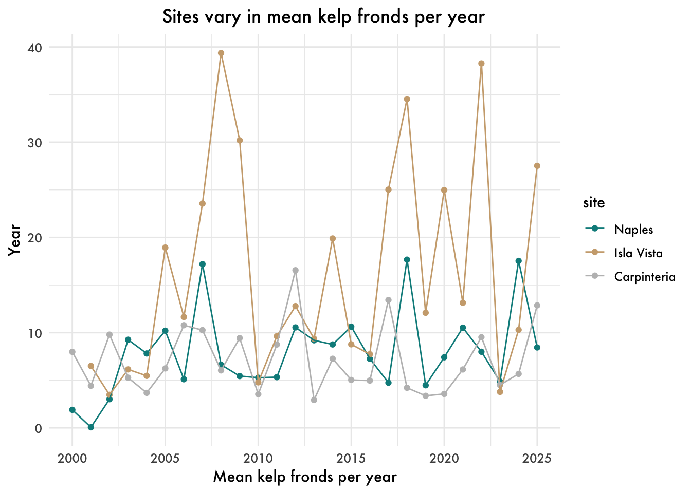
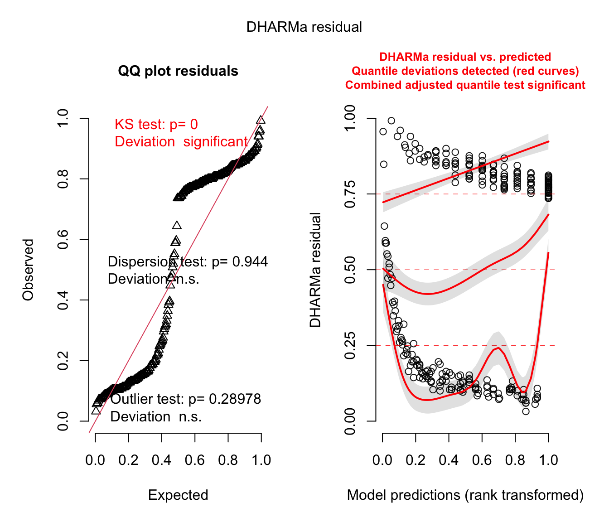
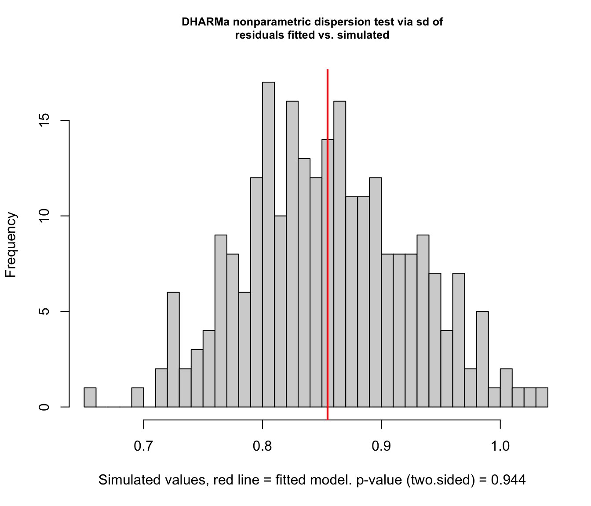
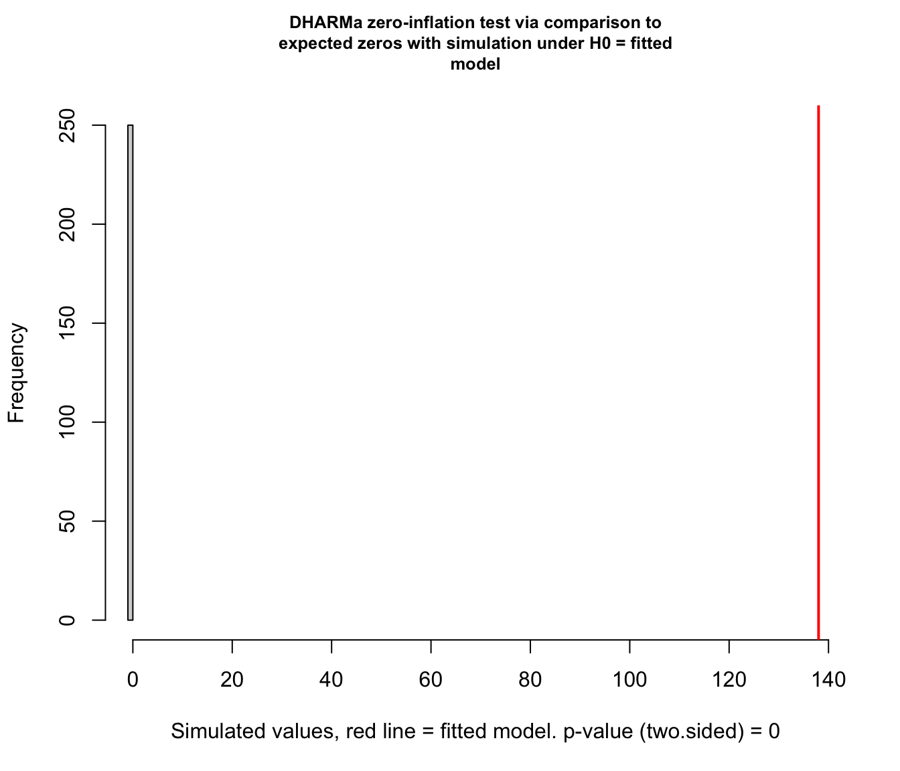
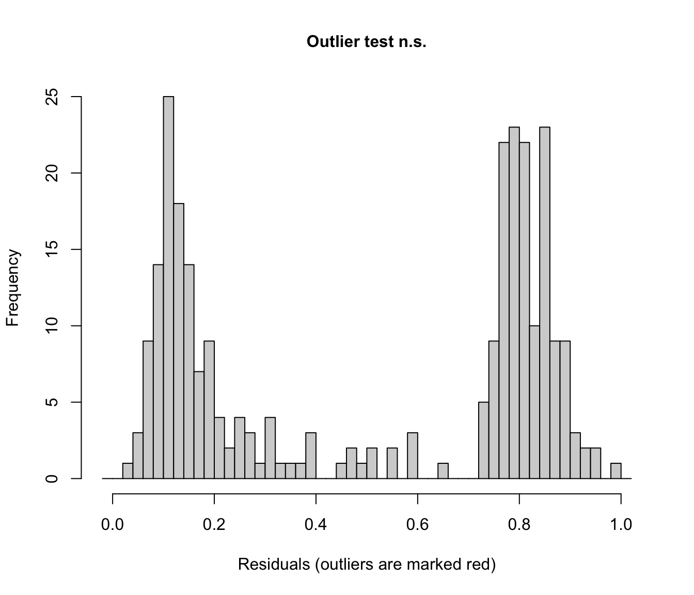

library(tidyverse) #loading in tidyverse
library(here) #loading in here
library(janitor) #loading in janitor
library(readxl) #loading in readxl
library(ggeffects) #loading in ggeffects
library(knitr) #loading in knitr
library(MuMIn) #loading in MuMIn
library(DHARMa)
kelp <- read_csv(
here(
"Data",
"kelp.csv"
))
mopl <- read_csv(
here(
"Data",
"MOPL_nest-site_selection_Duchardt_et_al._2019.csv"
)
)Final for Env S 193DS
Set Up
Problem 1. San Joaquin River Delta
a. We determined that there is not enough evidence to suggest a difference between the median flooded wetland area across water year classification (wet, above normal, below normal, dry, critical drought).
b. A boxplot could be created to highlight the medians and interquartile ranges of the median flooded wetland area across the different water year classifications. On the x-axis would be the different water year classifications and on the y-axis would be the recorded flooded wetland area, including the medians. In addition to the boxplot, the points could be jittered vertically to further show the data.
c.
d.
Problem 2. Data Visualization
a.
kelp_clean <- kelp |>
# function 3
clean_names() |> #removes underscores and capital letters
# function 6
filter(site %in% c("IVEE", "NAPL", "CARP")) |> #filtering by three sites
# function 8
mutate(site = case_when( #changing site names
site == "NAPL" ~ "Naples", #changing site NAPL to Naples
site == "IVEE" ~ "Isla Vista", #changing site IVEE to Isla Vista
site == "CARP" ~ "Carpinteria")) |> #changing site CARP to Capinteria
# function 2
mutate(site = as_factor(site), #converts the site name to a categorical variable
site = fct_relevel(site,
"Naples", "Isla Vista", "Carpinteria")) |> #changes the order of factor levels
# function 1
filter(!(date == "2000-09-22" & transect == "6" & quad == "40"))|> #filtering by the date, transect, and quad number
# function 5
group_by(site, year) |> #grouping by site name and year
# function 7
summarize(mean_fronds = mean(fronds)) |> #creating a column for the mean
# function 4
ungroup() #ungrouping any prior groupings`summarise()` has regrouped the output.
ℹ Summaries were computed grouped by site and year.
ℹ Output is grouped by site.
ℹ Use `summarise(.groups = "drop_last")` to silence this message.
ℹ Use `summarise(.by = c(site, year))` for per-operation grouping
(`?dplyr::dplyr_by`) instead.b.
c.
ggplot(data = kelp_clean, #using kelp_clean df
aes(x = year, #year on x axis
y = mean_fronds, #mean_fronds on y axis
color = site)) + #grouping by site
geom_point() + #inserting points on graph
geom_line() + #adding line to the graph
labs(x = "Mean kelp fronds per year", #titling the x axis
y = "Year", #titling the y axis
title = "Sites vary in mean kelp fronds per year") + #adding a title
scale_color_manual(values = c("Naples" = "cyan4", #changing the color of Naples points and line
"Isla Vista" = "burlywood3", #changing the color of Isla Vista points and line
"Carpinteria" = "grey")) + #changing the color of Carpinteria points and line
theme_minimal() + #changing theme to minimal
theme(plot.title = element_text(hjust = 0.6), #altering plot title position to be centered
text = element_text(family = "Futura")) #changing the overall text font 
d.
Isla Vista had the most variable mean kelp fronds per year because it has the highest peaks overall and the greatest difference in increases and decreases per year (represented by the changes in slope of line between each yearly point). Carpinteria had the least variable mean kelp fronds per year because the line has fairly consistent minimums and maximums (represented by the highest and lowest points).
Problem 3. Data Analysis
a.
The 1s and 0s represent whether the site was used for nesting by Mountain Plovers, where 0 is the absence and 1 is the presence.
b.
The variable for distance to prairie dog colony edge is a continuous variable. This could influence the probability of Mountain Plover nest site use because it increases the vulnerability of the nesting site due to altered vegetation composition, which is included in the methods and discussion section of the paper. The variable for visual obstruction is a continuous variable. It could influence the probability of Mountain Plover nest site use because it can impact the visibility of the nest to predators, which is included in discussion section of the paper.
c.
| Model number | Distance to prairie dog colony edge | Visual obstruction | Predictors |
|---|---|---|---|
| 0 | no predictors (null model) | ||
| 1 | X | X | all predictors (full model) |
| 2 | X | only visual obstruction | |
| 3 | X | only distance to prairie dog colony edge |
d.
e.
AICc(
model0,
model1,
model2,
model3
) |>
arrange(AICc) df AICc
model2 3 363.5302
model1 4 365.5744
model0 2 404.6808
model3 3 406.1991The best model as determined by Akaike’s Information Criterion (AIC) was the model with only visual obstruction.
f.
sim_res <-simulateResiduals(fittedModel = model2)
plot(sim_res) 
testDispersion(sim_res)
DHARMa nonparametric dispersion test via sd of residuals fitted vs.
simulated
data: simulationOutput
dispersion = 1.0001, p-value = 0.944
alternative hypothesis: two.sided testZeroInflation(sim_res)
DHARMa zero-inflation test via comparison to expected zeros with
simulation under H0 = fitted model
data: simulationOutput
ratioObsSim = Inf, p-value < 2.2e-16
alternative hypothesis: two.sided testOutliers(sim_res)
DHARMa outlier test based on exact binomial test with approximate
expectations
data: sim_res
outliers at both margin(s) = 0, observations = 276, p-value = 0.2898
alternative hypothesis: true probability of success is not equal to 0.007968127
95 percent confidence interval:
0.00000000 0.01327658
sample estimates:
frequency of outliers (expected: 0.00796812749003984 )
0 g.
h.
i.
j.
Problem 4. Affective and Exploratory Visualizations
a.
The visualizations from Homework 2 and Homework 3 are similar in the overall outline of the visualization. They have the same x and y axes and have similar shapes, given that the visualization for Homework 3 is an abstract version of Homework 2. However, the final product for the affective visualization differs in that it displays another variable than the initial visualization it was based on does. The affective visualization combines the two initial visualizations in Homework 2, as it displays the school and non school days, as well as a time series plot. In these visualizations, I see a trend in my wake up times on weekends being later than on week days. This is consistent between all visualizations, as they all display, in some way, wake up times for weekends and school days. In week 9, the primary feedback I got was to add in another variable to my visualization. One idea presented was to add in the time of my first obligation as clouds or something similar. I realized I wouldn’t be able to do this because there was such a big contrast between my first obligation and my wake up time. Instead, I added another color to represent when the weekends were to differentiate and highlight the differences in wake up times, which was also my primary predictor variable.
b.
c.
d.
e.
f.
g.
I completed the activity in section.